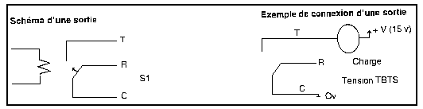
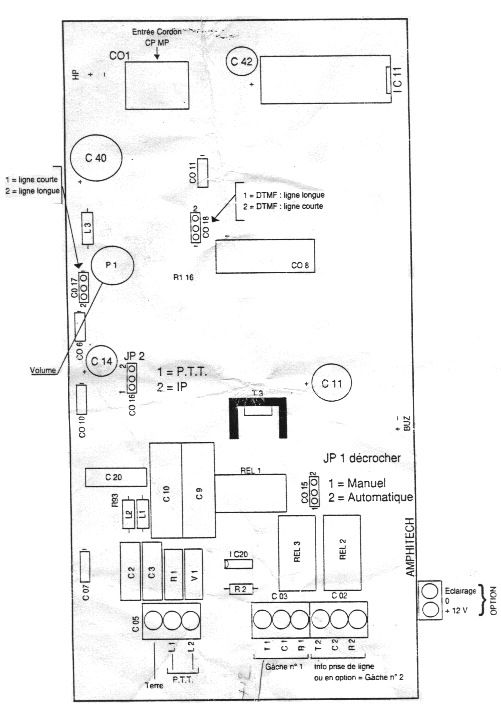

|

INTERPHONES
|
INTRODUCTION DOC sur les interphones de la marque AMPHITECH. L'administration de ces portiers éléctroniques semblent tres simple, il suffit "juste" de trouver le numéro de téléphone. Il semblerait que ce type d'interphone soit utilisé dans les campus universitaires, et notemment pour les batiments de chambre U. Plus d'infos sur le constructeur à l'adresse suivante : AMPHITECH 1. DESCRIPTION Les PTC 21 SN, PTC 21, PTC 22, PTC24 sont des portiers téléphoniques detinés à être connectés sur autocommutateurs privés ; ils possèdent 1 récepteur de télécommande de Gâche, 1 sortie Information "Prise de ligne" (sur relais) pour commande d'éclairage ou de caméra. En option : l'info "Prise de ligne" devient un 2eme récepteur pour Gâche PTC 21 SN : Appel par prise de
ligne (numérotation par l'autocommutateur)
2. RECOMMANDATIONS Il est conseillé d'utiliser un cable blindé entre le boitier et l'autocommutateur, le blindage étant relié à la terre d'un seul côté. Le boitier doit être relié à la terre
3. INSTALLATION Les portiers sont livrés avec un capot de protection, permettant l'encastrement dans les parois minces (1 à 4 mm). Des boîtiers pour encastrement en maçonnerie et pour montage en saillie sont disponibles, pour ces 2 derniers modèles poser impérativement le joint assurant l'étanchéité de la façade.
4. RACCORDEMENT (voir annexe 1)
 Nb:
5. INITIALISATION (voir annexe 1) A sa sortie d'usine, le portier est livré pour fonctionnement sur autocommutateur privé, cavalier JP 2 sur position 2. En cas de fonctionnement sur P.T.T mettre JP 2 sur position 1. Décrocher automatique Longueur de ligne Réglage du volume
d'écoute
6. PROGRAMMATION (voir annexe 2 et 3) La programmation concerne :
Voir annexe 2 : menu de
programmation par clavier local
Exemples de programmation de numéro pré-enregistrés PTC 21 (1 numéro d'appel pré-enregistré)
PTC 22 (2 numéros d'appel pré-enregistrés)
7. Utilisation PTC 21 SN PTC 21, 22, 24 Télécommande de gâche
ANNEXE 1: 
PROGRAMMATION DU PORTIER A DISTANCE PAR TELEPHONE DTMF Appeler la platine, apres reception du signal sonore (2100 Hz) vous disposez de 1,5 secondes pour appuyer sur la touche *, 2 bips vous invitent a entrer le code secret, une serie de bips sonores vous confime l'entree en mode de programmation. Si vous avez des problèmes d'affichage pour ce tableau, regardez plutôt le source de ce fichier.
----------------------------------------------------------------------------------------------------- TYPE DE CODE CONFIRM. TOUCHES ATTENDUES VALIDATION CONFIRMATION PROGRAMMATION D'ENTREE OU SIGNIFICATION (TOUCHE) ----------------------------------------------------------------------------------------------------- TYPE DE 0 0 2 bips NUMEROT. DECIMALE # 3 bips NUMEROTATION 0 1 2 bips NUMEROT MULTIFREQ. # 3 bips ----------------------------------------------------------------------------------------------------- RACCROCHER 0 2 2 bips Autorise fin de com par # 3 bips appui bouton PAR BOUTON 0 3 2 bips Interdit fin de com par # 3 bips appui bouton ----------------------------------------------------------------------------------------------------- TEMPS DE COMMUNICATION 0 4 2 bips Temps de com touches 0 a 9 Touche 0=permanent # 3 bips Touches 1 a 9 = 1 a 9 mn Programmation usine = 3 mn ----------------------------------------------------------------------------------------------------- MEMORISATION 2 1 2 bips N°appel memorise N°1 Tche 0 a 9 # 3 bips DU OU DES 2 2 2 bips " " 2 " # 3 bips NUMEROS 2 3 2 bips " " 3 " # 3 bips D'APPEL 2 4 2 bips " " 4 " # 3 bips Touche * : Attente de tonalite ----------------------------------------------------------------------------------------------------- GACHE N°1 3 0 2 bips Autorise la commande du relais # 3 bips de la gache 1 3 1 2 bips Interdit la commande du relais # 3 bips de la gache 1 3 2 2 bips Touches 01 a 25 : temps # 3 bips d'activation du relais gache1 ----------------------------------------------------------------------------------------------------- GACHE N°2 3 3 2 bips Autorise la commande du relais # 3 bips de la gache 2 3 4 2 bips Interdit la commande du relais # 3 bips de la gache 2 3 5 2 bips Touches 01 a 25 : temps # 3 bips d'activation du relais gache2 ----------------------------------------------------------------------------------------------------- CODE D'ACCES 3 6 2 bips Entrer l'acces code = 2 bips SECRET Entrer le nouveau code # 3 bips (4 chiffres) Programmation usine = 0.0.0.0 ----------------------------------------------------------------------------------------------------- CODE Touches 0 a 9 = code d'identif. D'IDENTIFI- 3 7 2 bips de la platine a 8 chiffres # 3 bips CATION Programmation usine = 0.0.0.0 ----------------------------------------------------------------------------------------------------- CODES 4 0 2 bips Touches 0 a 9 : 1er code d'acces # 3 bips GACHE N°1 Gache n°1 4 1 2 bips Touches 0 a 9 : 2eme code d'acces # 3 bips Gache n°1 4 2 2 bips Touches 0 a 9 : 3eme code d'acces # 3 bips Gache n°1 4 3 2 bips Touches 0 a 9 : 4eme code d'acces # 3 bips Gache n°1 4 4 2 bips Touches 0 a 9 : 5eme code d'acces # 3 bips Gache n°1 4 5 2 bips Touches 0 a 9 : 6eme code d'acces # 3 bips Gache n°1 ----------------------------------------------------------------------------------------------------- CODES 5 0 2 bips Touches 0 a 9 : 1er code d'acces # 3 bips GACHE N°2 Gache n°2 5 1 2 bips Touches 0 a 9 : 2eme code d'acces # 3 bips Gache n°2 5 2 2 bips Touches 0 a 9 : 3eme code d'acces # 3 bips Gache n°2 5 3 2 bips Touches 0 a 9 : 4eme code d'acces # 3 bips Gache n°2 5 4 2 bips Touches 0 a 9 : 5eme code d'acces # 3 bips Gache n°2 5 5 2 bips Touches 0 a 9 : 6eme code d'acces # 3 bips Gache n°2 ----------------------------------------------------------------------------------------------------- * 2 bips Fin programmation -----------------------------------------------------------------------------------------------------
Greets : A toute la TEAM cryptel
malheureusement décédée dans un tragique bust de cabine (Source
AFP-TAZ) 1999 - AAAH - |
|